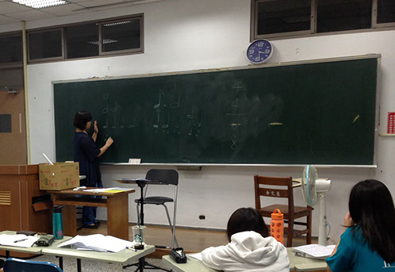
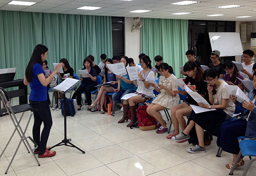

音樂，對你而言是什麼？ 對我們而言，是創造感動。


個別課

玉不琢，不成器。每一個人都有一副獨特的嗓音，雖然都有天生的音域限制，但都可透過後天的練習，來拓展自己的音域。個別課，分為個別聲樂課及個別指揮課。
指揮課只要是給予學生指揮、實習指揮的培訓課程。個別聲樂課會從呼吸、發聲的調整來進行聲樂訓練。
團員可選修聲樂課，來提高對自己聲音的認識，同時學習如何控制自己的聲音。個別聲樂課的訓練累積，會產生非常明顯的聲音差別。不僅在聲樂技巧上會有明顯的提升，也可將唱歌技巧，用於流行音樂表達。

團體練習

中正聲樂社的學生指揮，都經過實習訓練。平常的團練課，會由學生指揮帶領。
團練課是各部統合的時間，課堂上，學生指揮會調整各部的聲音，達到音響最佳的狀態。同時，混聲合唱在團體和聲中，會發生各部間干擾的情況。因此，透過團體練習，各聲部可培養更強的穩定性及獨立性。
團體練習，也會訓練團員們與指揮之間的默契。除了給予呼吸的提示外，也可讓團員了解指揮拍及指揮詮釋。
指導老師修曲，為中正聲樂社最重要的課程。老師會根據團上的整體狀況，調整音樂表現及速度。同時，也會評估團內的音樂訓練，調整音樂的詮釋、風格。
課堂上，老師可以解答學生指揮所不能決定的細節，最重要的，老師會對曲目做進階的音樂雕琢，讓音樂的完整度提高。
修曲，是聲樂社的必修課程，每個人都必須出席。
修曲